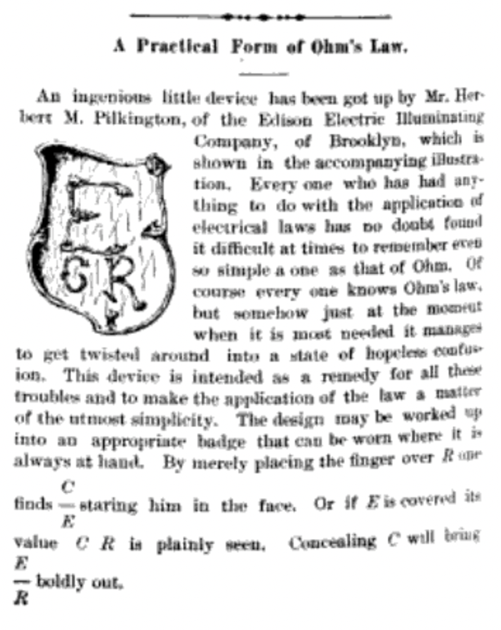
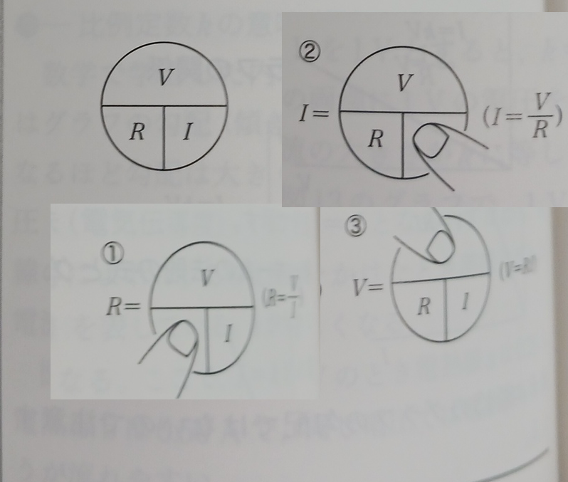

OT図とは、2つの量の積が第3の量になる関係を表現する暗記の手段で、第3の量を表す記号を上段に配し、その他の量の記号を下段に配する図表を総称していう。日本では円を三分割しあたかもOの中に Tをはめこんだ枠組みの中に3つの量が書き込まれることから、OT図と呼ぶことにしたが、海外の事例、例えば三角形を三分割した図表、上下を割線で区切ったもの、上下を分ける記号をもたないものも含めてOT図と呼ぼう。
OT図の起源は、オームの法則に登場する3つの量、電流、電圧、抵抗の関係をこの図に表したものである。ニューヨークの電気専門の週刊誌 The Electrical World の 1892年6月25日号にA Practical Form of Ohm's Lawという挿絵付きの記事が載った。 無署名のこの記事は、電気関係の実務者であってもオームの法則を間違えやすいこと、エジソン電気照明会社勤務のハーバート・M・ピルキントンがEを上段に、CとRを下段に配する意匠を作成したことを伝える。挿絵のとおり、ピルキントンの意匠では 上段のEはCとRに比べ2倍程度の大きさを持っている。The Electrical Worldはこれをバッジにすればどこにいても利用できると提案している。以下がその全文である。
An ingenious little device has been got up by Mr. Herbert M. Pilkington, of the Edison Electric Illuminating Company, of Brooklyn, which is shown in the accompanying illustration. Every one who has had anything to do with the application of electrical laws has no doubt found it difficult at times to remember even so simple a one as that of Ohm. Of course every one knows Ohm's law, but somehow just at the moment when it is most needed it manages to get twisted around into a state of hopeless confusion. This device is intended as a remedy for all these troubles and to make the application of the law a matter of the utmost simplicity. The design may be worked up into an appropriate badge that can be worn where it is always at hand. By merely placing the finger over R one finds C E staring him in the face. Or if E is covered value C R is plainly seen. Concealing C will bring E R boldly out.

ピルキントンの提唱したOT図は直ちに伝播を開始した。ロンドンの専門週刊誌 The Electrician は 1892年7月8日号にこの記事をほぼそのまま転載している。
日本ではオームの法則を表すOT図が戦時中から存在する。武田 (1943: 9)は、 青少年を対象とした参考書の中で、電圧、電流、抵抗をOT図に書き入れた例である。
山口大学教育学部で永年、理科教育を講じた堂面春雄(1930年生2014年歿)は、 堂面 (1988: 72)で【この手法は古くから流布しているようで、筆者も旧制中学校在学中に耳目にした。】と述べている。この述懐は、堂面が 【中学校教師用書の例 (禿ほか1984)】に【オーム則の「暗記法」】(同)を見出した際のものである。堂面 (1988: 85)の【参考文献】はこの指導書を【禿 宗男ほか1984。改訂中学校理科・1分野下・教師用指導書。大日本図書刊。】 と記している。
2024年時点で現用の大日本図書の中学理科教科書に付属する教師用指導書も、オームの法則を表すOT図を掲載している。大日本図書編 (2021: 182)のレプリカを提示しよう。このページは「単元3 電流とその利用」に含まれ、 レプリカは指導書の下段注になっている。
◉中学校1年で学んだ密度の計算同様、生徒はわり算を敬遠しがちだが、繰り返し練習問題をさせて、数値の扱いに慣れさせる。
◉オームの法則の式は、小学校5年で学習した道のり・時間・速さの関係式に似ており、2つの数値から残りの1つの数値を計算で求められる。
